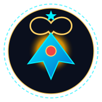

Final checks on the 'Sungqar-X' heavy booster and orbital rendezvous with research cruiser TULPAR-01. Loading national Kazakh rations and aligning life support.
Kazakhstan's space program achieved an epochal leap by retrofitting the historic Launch Complex No. 1 ('Gagarin's Start'). The next-generation research cruiser TULPAR-01 is reinforced with dual bimetallic composites and powered by 'Sungqar' ion-plasma thrusters. A crew of six elite astronauts was dispatched to Acidalia Planitia to establish the permanent Martian science station OUTPOST 13.
QONAQ (The Guest): An unseen gravitational presence roaming the compartments of TULPAR-01 and the Martian base. Appears when power levels fall below 30%. Leaves geometric frost patterns and petroglyphs on observation windows. It does not attack if the crew honors ancestral steppe hospitality.
ÄZHE (The Grandmother): A haunting, maternal radio signal broadcasting on 13.13 kHz. A gentle voice sings an ancient steppe lullaby, cautioning the astronauts against the horrors lurking in the planetary mantle.
ZHALMAUYZ (The Devourer): A dormant electromagnetic titan slumbering beneath the crust of Mars. Feeds on crew panic and discord. It can only be overcome through united collective willpower and the custom of ASAR!
ASAR: The ancient nomadic custom of communal mutual aid. Aboard Outpost 13, catastrophic airlock or reactor failures cannot be repaired alone — they require synchronized cooperation between two or more crew members.
The Space Dastarkhan: Qazy (high-calorie vacuum-cured meat for stamina), Qurt (radiation-protective calcium dairy spheres), Qymyz (fermented mare's milk bio-culture for neurological balance), and Bauyrsaq (zero-g puffed bread pillows for morale).
Legend holds that the true guardian of the expedition is the timeless spirit of the Great Steppe. If the crew surveys ancient Martian petroglyphs, offers QONAQ a fresh bowl of Qurt, and tunes the antenna to 13.13 kHz while murmuring ancestral blessings, a sacred ending reveals that the anomaly is a guardian spirit sent by grandmother ('Apa') to protect her children across the stars!
Optimized for mouse, keyboard, and touch devices. In the radio intercom, try typing words like "asar", "help", "qurt", "food", "qonaq", or "signal" to trigger responsive in-character dialogue from your AI crewmates!
Calculating mission debrief...